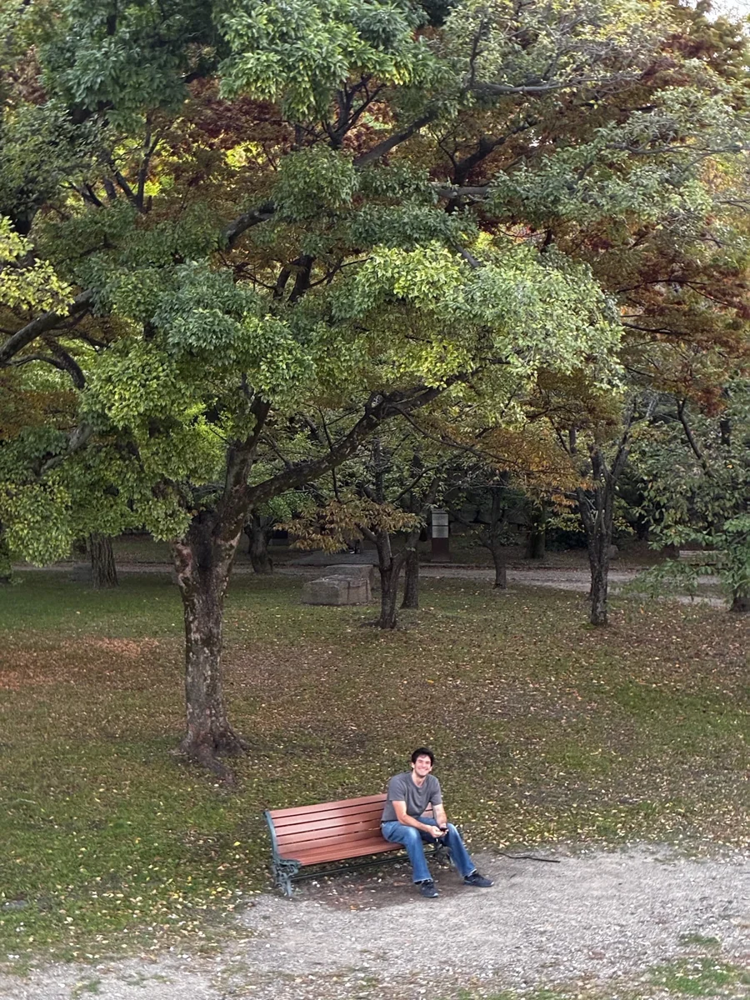
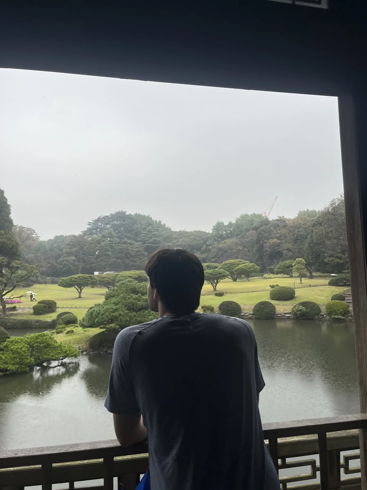
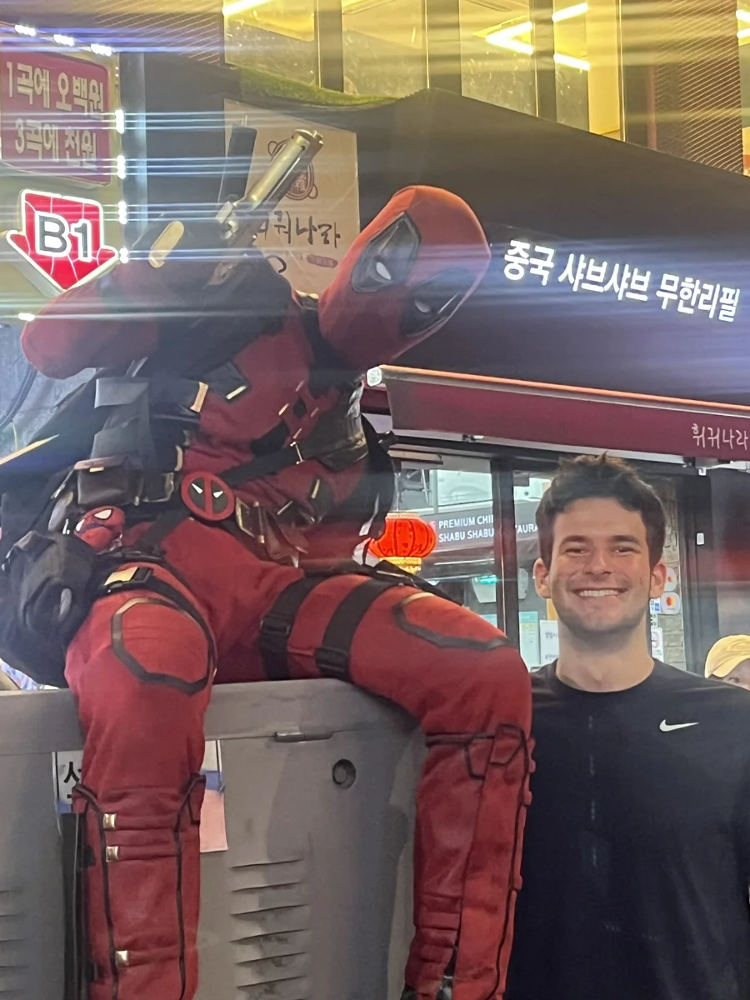

A daily crossword.
I do the USA Today crossword and enjoy NYT Spelling Bee. I also have a soft spot for sudoku, logic games, and a puzzle that looks simple until you actually try it.
INTERESTS
Some things I’m competitive about, some things I’m curious about, and some things I just enjoy.
IT STARTED AT SUMMER CAMP
I’ve been asked that a lot about cubing. To me, each scramble is a different problem: what can I spot, what can I do more efficiently, and can I make the next solve a little better?
I learned at 11, kept practicing, and eventually started competing—including one-handed and blindfolded events. My official 3×3 single is 6.28 seconds.
My first successful blindfolded solve came after plenty of failed attempts. Opening my eyes to a solved cube was a pretty good feeling.
LATELY / STUDY ABROAD
Seoul has been home base during my semester abroad. I’ve also been traveling—to Busan, Jeju, Taiwan, Japan, Hong Kong, and the Philippines. Getting to explore has been one of my favorite parts of being here.
A FEW MOMENTS ALONG THE WAY



I do the USA Today crossword and enjoy NYT Spelling Bee. I also have a soft spot for sudoku, logic games, and a puzzle that looks simple until you actually try it.
I love the Pistons and follow the NBA. I also love watching tennis—and playing: I captained my high-school team. Basketball and pickleball make it into the mix too.
My favorite book is Outliers by Malcolm Gladwell, and my favorite show is Game of Thrones. I love watching movies, too.
I love learning about all three. I’m also interested in religious philosophy and enjoy listening to discussions that make me think through a question differently.
One of my classes abroad dives into nuclear politics, Juche, China–North Korea relations, and international-relations frameworks. It’s been another way to explore the region while I’m living here.
I enjoy strength training and learning what makes training effective. For a different pace, I’m happy to sit down for chess or a game of Euchre.
Something in common?
Say hello ↗